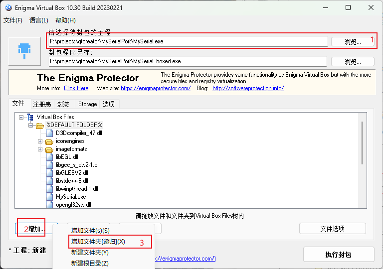

QTcreator上位机
检查QByteArray每个字节的bit
QByteArray byteData; const char *pData = byteData.constData(); for (int i = 0; i < byteData.size(); ++i) { for (int j = 7; j >= 0; --j) { if (pData[i] & (1 << j)) { std::cout << "1"; } else { std::cout << "0"; } } std::cout << std::endl; } std::cout << "--------------------" << std::endl;更换图标，将.ico放到工程文件夹内，在.pro中添加
RC_ICONS = xxxxxx.ico打包可执行文件：
构建切换到Release模式，点击运行
在build-xxxxx-Release文件夹中的release文件夹中找到xxx.exe，复制到新创建的一个文件夹（如MyEXE）中，
开始菜单搜索qt，打开命令窗口，用" cd /d 路径 "切换到MyEXE下，例如
cd /d F:\projects\qtcreator\MyEXE再输入：windeployqt xxx.exe
windeployqt xxx.exe打包完成，已经可以正常使用了。接下来借用其他软件将所有文件打包到一个exe文件
打开Enigma Virtual Box，选择刚才打包好的exe文件，点击增加，添加刚才新创建的文件夹（如MyEXE），点击“文件选项”，勾选压缩文件，确定，执行封包，等待，最后就可以得到只有一个可以运行的exe文件

本博客所有文章除特别声明外，均采用 CC BY-NC-SA 4.0 许可协议。转载请注明来自 颢星的博客！
评论